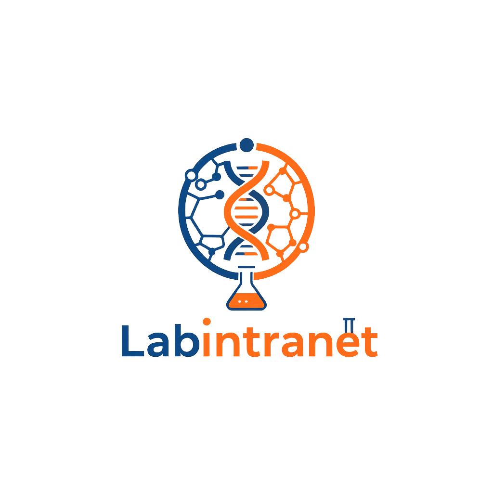

Profesor
Dashboard
Prácticas
Inventario
Peticiones
Reportes
Cerrar Sesión
Generar Reportes de Uso de Materiales
Selecciona una práctica y/o un rango de fechas para generar y descargar un reporte de consumo.
Filtrar por Práctica:
-- Todas mis Prácticas --
Filtrar por Rango de Fechas (Opcional)
Desde:
Hasta:
Cargando...
Descargar Reporte (CSV/PDF)
El reporte se está generando. La descarga comenzará automáticamente.